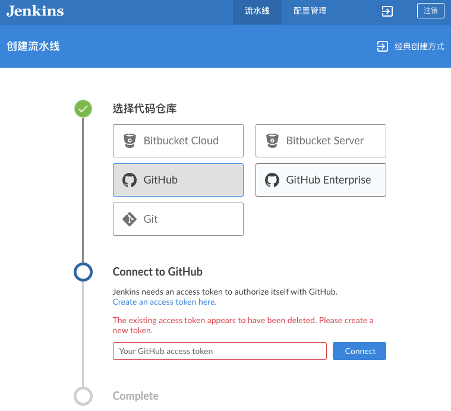
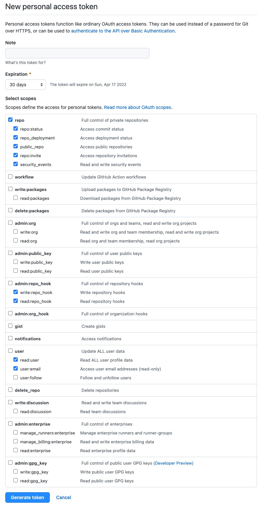
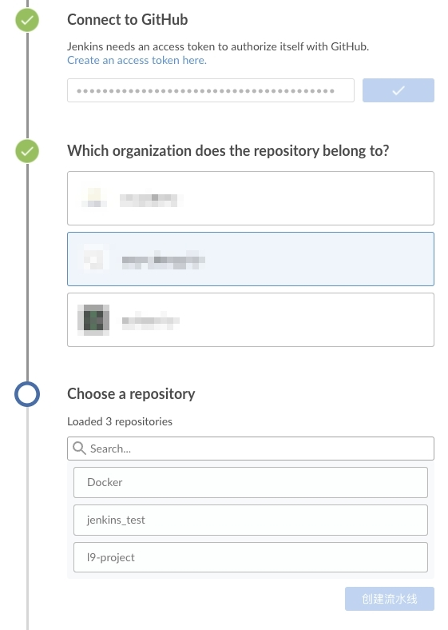
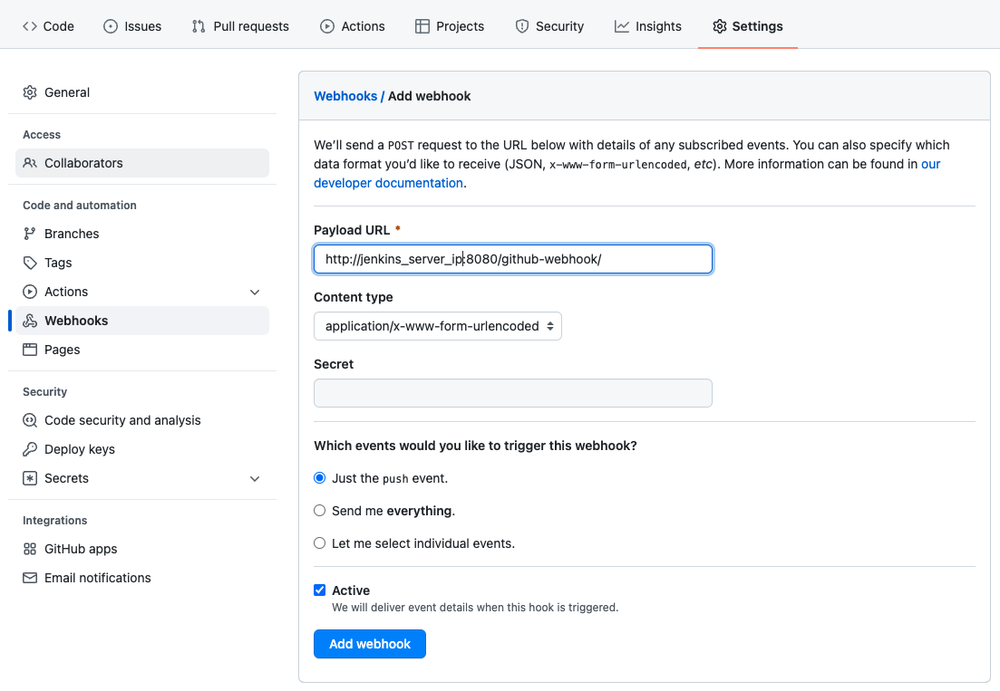
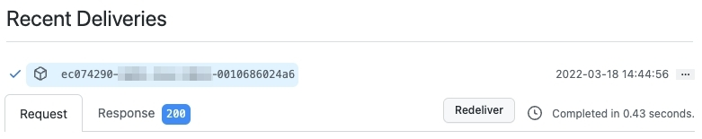
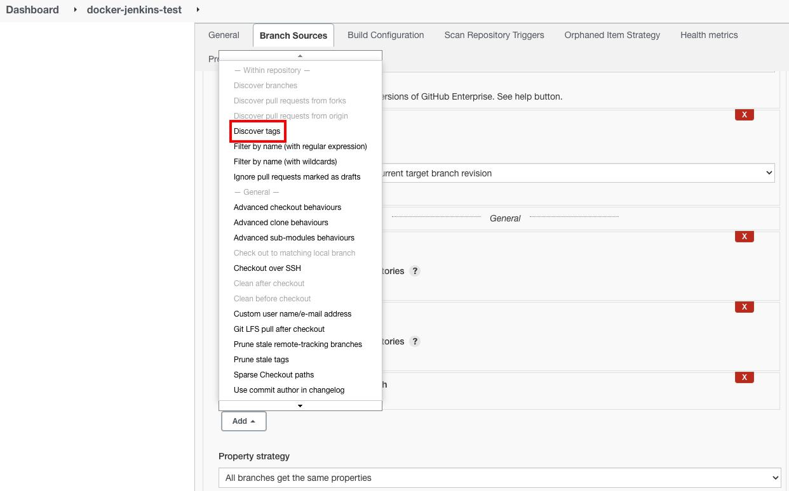

Jenkins CI/CD 02 Basic Pipeline Setup and GitHub Integration
Creating a basic pipeline workflow and triggering it through GitHub webhooks

In Jenkins
, the build process is known as a pipeline.
It can also be triggered through webhooks, offering various triggering and execution methods.
Below, we’ll demonstrate how to integrate GitHub webhooks and provide common trigger condition examples.
Creating the First Pipeline
Navigate to Open Blue Ocean in the sidebar to create a new pipeline.
Follow the prompts to create an access token. In this demonstration, I had to generate a new token because I deleted the old one, resulting in a Token deleted error message.

Click Create an access token here to open the personal access token creation page on GitHub.
You can also find it by going to
GitHub > Settings > Developer settings > Personal access tokens > Generate new token
The necessary permissions are typically pre-filled; simply click Generate token.

Copy the generated token and paste it into Jenkins.
If you forget to do so at this point, you’ll need to regenerate the token.
Once verification is complete, you can select a project.

Click “Create,” and Jenkins will scan all branches within the GitHub repository.
Connecting Webhooks to Listen for Events
進入專案的 Settings > Webhook > Add webhook
在Payload URL填入jenkins主機網址/github-webhook/
如果 port 不是使用 80 或 443，則要完整輸入。例如 Jenkins 預設使用的是8080port
Now, let’s make some changes to the project and commit and push them to GitHub.
You might notice that Jenkins isn’t responding.
This is because we haven’t configured Jenkins to listen to GitHub events.
How can we do that? Through webhooks!
Webhooks transmit events to a specified URL when events configured in the webhook settings are triggered.
To allow Jenkins to receive GitHub events, you must bind the webhook to your project.
This is typically automated in Drone
when you build a project, but not in Jenkins.
Go to your project’s Settings > Webhook > Add webhook.
In the Payload URL field, enter your Jenkins server’s URL followed by /github-webhook/.
If your port isn’t 80 or 443, you should include the complete URL.
For example, if Jenkins is using the default port 8080:

Click “Add webhook” to create it and then test the connection.
If the test fails, you can adjust the settings and click the three dots on the right to Redeliver for a retest.

From now on, every time a push event occurs(based on the webhook settings), Jenkins will be notified.
This way, we achieve the goal of triggering a Jenkins build process when new content is pushed to GitHub.
Listening for Tag Events
In version releases, we often tag the current version.
In my previous experience with Drone, when a tag was pushed to the repository, the corresponding event was sent via webhook.
However, in Jenkins, it’s not that simple.
I struggled with this for a while until I found the solution in the official documentation: When using tags in Jenkins Pipeline
.
By default, Jenkins doesn’t set up tag listening.
You need to access your pipeline settings, navigate to Branch Sources, and in the Behaviours section at the bottom, check Discover tags to enable tag listening.
I’m still not entirely sure why this design choice was made.

Basic Pipeline Example
Here, I’ll provide a basic demonstration of several commonly used trigger conditions.
Details on what actions to take after triggering will be discussed later.
Start by creating a file named jenkinsfile in the project’s root directory.
Jenkins uses this file as the default pipeline configuration.
// jenkinsfile
pipeline {
agent any
stages {
stage('Example Build') {
steps {
echo 'Hello World'
}
}
stage('Example Deploy') {
when {
branch 'production'
}
steps {
echo 'Deploying'
}
}
stage('Example Tag Deploy') {
when {
buildingTag()
}
steps {
echo "Building $TAG_NAME"
}
}
stage('Example Tag Deploy') {
when {
tag "release-*"
}
steps {
echo "Building $TAG_NAME"
}
}
}
}
Here, we demonstrate four trigger conditions:
No when statement: This stage triggers regardless of the conditions.when branch: This stage triggers only when a specified branch is pushed.when buildingTag(): This stage triggers when any tag is created.when tag "release-*: This stage triggers only when tags conforming to the format “release-*” are created.
These four conditions provide a foundation for various pipeline workflows.
For more usage options, consult the official documentation: Pipeline Syntax .
After reviewing the documentation, you might find that Drone
is preferable.
As Jenkins offers a multitude of options, making it easy to get lost.
Different developer have different preferences for using the UI or command line.
However, the fundamental concepts remain the same, and experience in one can be applied to the other.
This concludes the basic introduction to Jenkins pipelines.